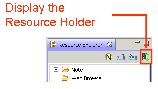
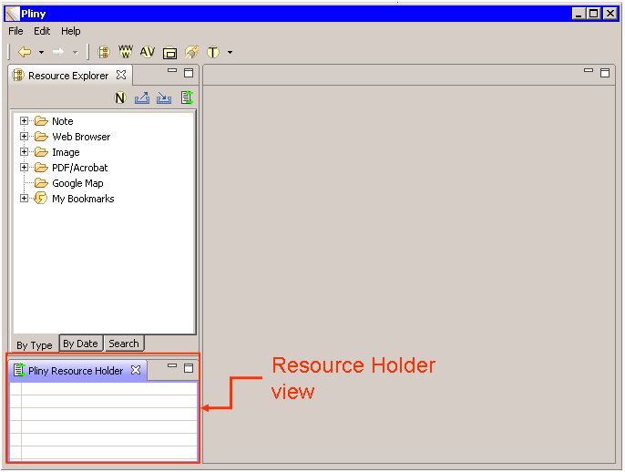
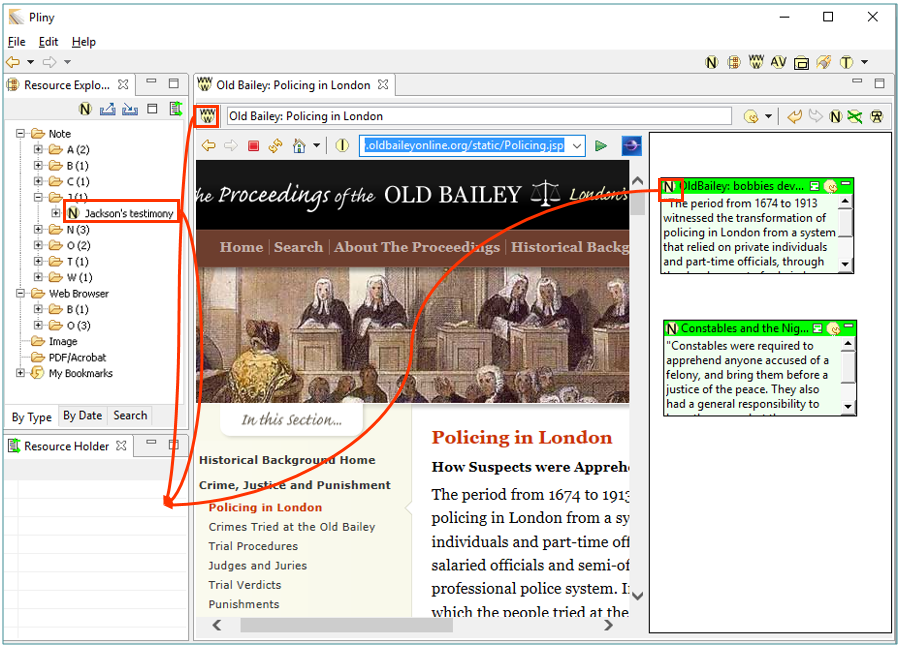
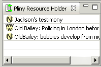

|
|
During the times that you are working on organising your annotations and notes you will find that you will want to copy a note from one place to another. You can do in various ways without the Resource Holder View, but often none are particularly comfortable to manage. Pliny's Resource Holder view helps with this by providing a place where you can temporarily hold a reference to an object. Drag something into the Resource Holder view to place a temporary reference to it there, then drag it back from the view when you are ready to place it somewhere.
The button to display the Resource Holder is located among the Resource Explorer's buttons:

Clicking on it will cause the Resource Holder to display. There is a problem in the Pliny code that may cause it to appear in the wrong place on the Pliny screen the first time you launch it. We find it best to place it in the bottom left corner of the Pliny screen, below the Resource Explorer, like this (and, indeed, we tried to write the code in Pliny to get it placed there automatically for you!):

If it doesn't appear there, or you wish it to be somewhere else, you can move it. If you don't know how to move the Resource Holder from where Pliny first places it to this lower left-hand corner, review the instructions for this found in section "Arranging Panes on the Screen in Managing Panes. You can even drag it outside of Pliny's window altogether. See the discussion about this in the section "Moving viewpanes out of the Pliny main window" in the topic Managing Panes.
Once you place it here (or elsewhere, if you prefer), Pliny will correctly remember the place, so that if you open it again it will start up next time back in the location in which it last appeared.
To close the Resource Holder, click on the X beside the Resource Holder tab.
The Resource Holder provides a place to temporarily "dock" a Pliny item. Use it to copy a reference from one place in your Pliny materials to another. To use the holder, drag a reference to an item to the resource holder view, and release it (remember, as in all drag and drop operations in Pliny, you must drag the draggable object attached to the object: for a reference object, for example, this is the icon in the top left corner).
This figure shows the various places you can drag from, when dragging items to the Resource Holder:

The holder will display the icon and title for the item that it is currently holding for you. You can drag more than one item to the resource holder -- the latest item to be added will always appear at the top:

When you are ready to place one of the items in the resource holder in a new place in Pliny, drag the item from the resource holder to the place you would like to place it. A reference to the item will appear at the destination, and it will be removed from the Resource Holder list.
The Resource Holder is a way to provide a temporary place to store a reference only. It is wiped clean each time Pliny is stopped, and so will be empty next time Pliny is started up again.
That's all there is to it!
 |
| Pliny Help Pages by John Bradley are licensed under a Creative Commons Attribution-Noncommercial-Share Alike 2.0 UK: England & Wales License. |